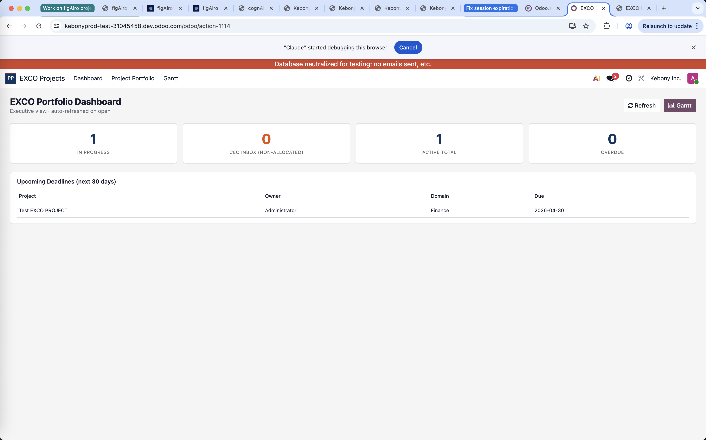
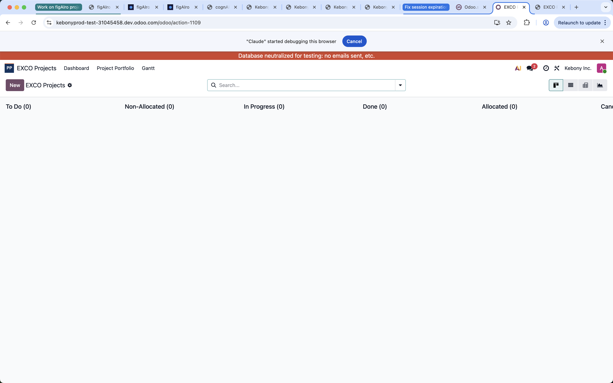
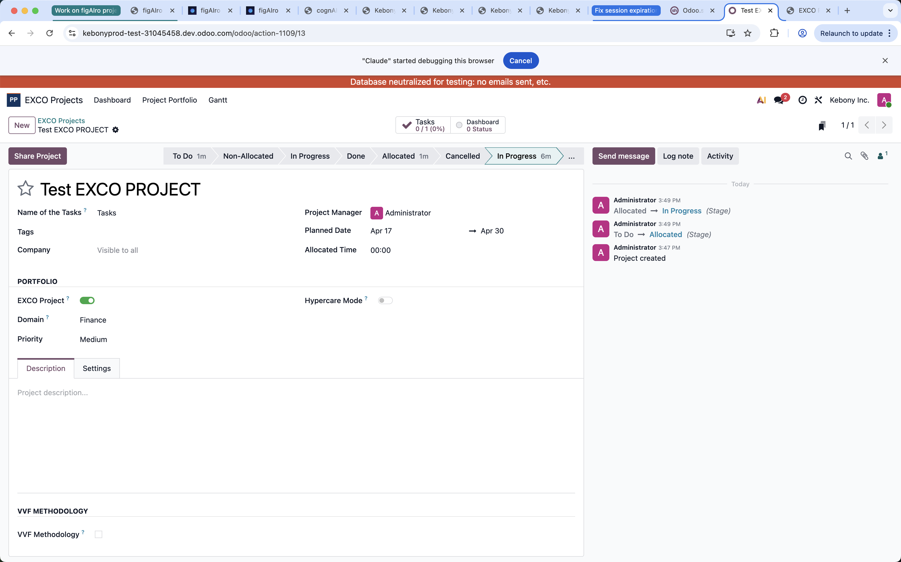
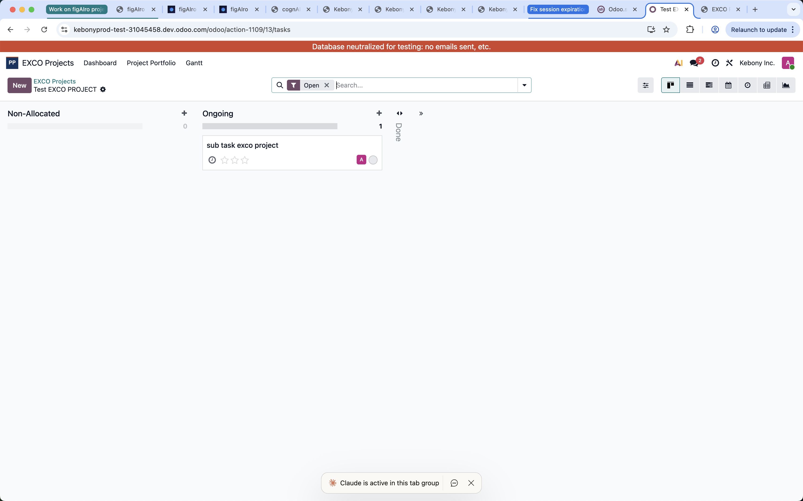
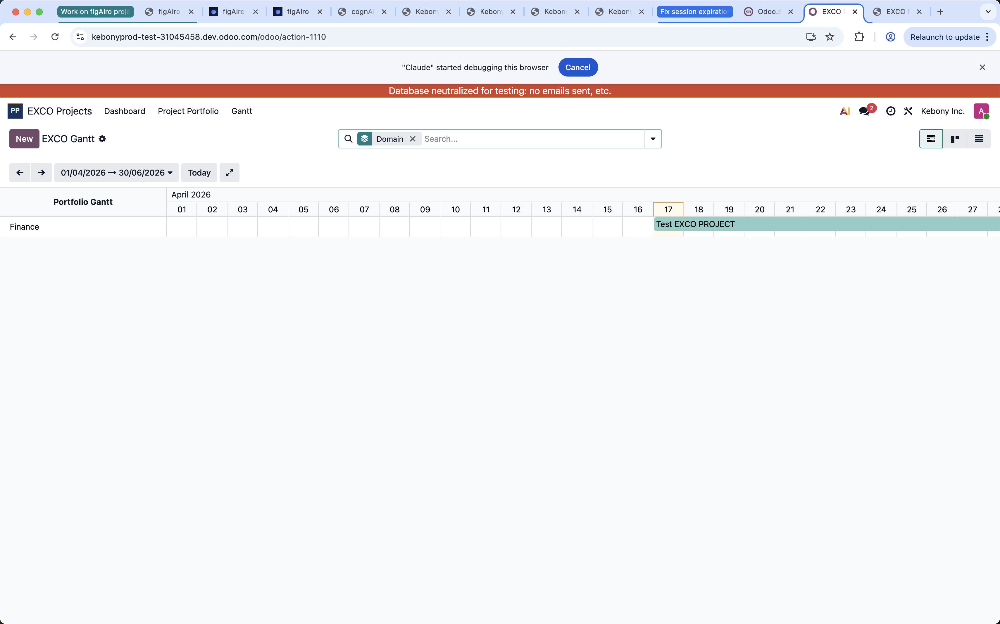

Spreadsheets and emails don't give that. Projects get tracked 12 different ways across 12 owners.
EXCO Projects gives:
Each project has an owner who manages tasks underneath. The portfolio updates automatically as task work progresses.
Finance · Production · Supply Chain · Quality · Certification · Sales · Marketing · US Market · IT · Odoo
Fully customizable — add, rename, or disable via Configuration.
Non-Allocated → Allocated → In Progress → Done
Projects move through stages automatically as their tasks progress

Shows the 8 projects closest to their planned end date in the next 30 days. Name, owner, domain, due date. A "what to worry about this month" at-a-glance.



The tasks that make up this project. Owner + team break the project into actionable tasks here. Useful to check progress when needed.
Click "EXCO Projects" in the breadcrumb to return to the portfolio.
Click "+" in any stage column. Creates a task within this project.
Click the Gantt icon in the top-right view switcher — shows this project's tasks on a timeline.
Click the gear ⚙ next to the title to reopen the project form.

EXCO Project — a strategic initiative tracked at C-level.
Domain — the business area a project belongs to (Finance, IT, etc).
Owner (Project Manager) — the person accountable for delivering the project.
✅ Create projects
✅ Assign owners
✅ Set domain + priority + dates
✅ Check portfolio health
✅ Use Gantt for planning
You do NOT manage individual tasks — that's the owner's job.
🛠 Technical issues → IT team
📊 Reporting / domain changes → PMO lead
🎓 Training / re-walkthrough → Olivier Eberhard